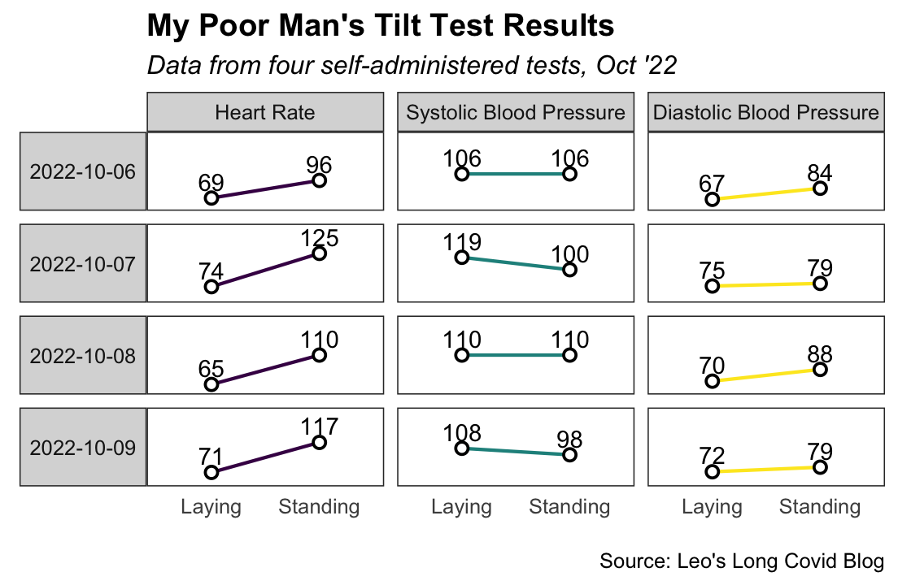

It wasn’t until about three months into my Long Covid that I began to have trouble with my heart rate.
I was having a good month by the standards of my new medical condition, so I took the opportunity to try to squeeze in a haircut. I was still trying to be careful — not wanting another episode of post-exertional malaise (PEM), a subject for a future blog post — so I took an electric scooter to and from the barbershop, fifteen minutes away.
I thought my body could handle an electric scooter ride. After all, at this point in my recovery, I was doing a daily 15-20 minute walk, albeit with a break every five minutes. And I’d taken shorter scooter trips a few times without incident.
But partway through the trip, I noticed on my FitBit that my heart rate had shot up to 130 beats per minute. A full 60 higher than my resting heart rate of 70. As far as I could tell, just from standing and balancing on the electric scooter on a warm day.
Uh oh, that’s not normal.

At the barbershop, I noticed malaise setting in as my haircut proceeded. The feeling of being sick and mildly poisoned crept down my head and neck. With the barber making small talk, my ability to hold conversation quickly diminished.
Fast forward, nearly two months later
Seemingly starting with the scooter incident, elevated heart rate has now become a way of life. Rarely does five minutes of being upright pass without me checking the heart rate reading on my wrist at least once.
For much of the last two months, I have been horizontal on my couch or bed, the only apparent position in which my heart rate cannot make me sicker. After the scooter ride left me feeling worse for about 5 weeks, I am still too scared to resume daily walks — not wanting to inadvertantly push too far again.
I’ve also since been diagnosed by a cardiologist with POTS, or at least something like it. POTS stands for Postural Orthostatic Tachychardia Syndrome, and it’s a common co-morbidity among those of us who haven’t recovered from Covid. POTS is a nervous system dysfunction that makes the body unable to comfortably tolerate being upright. As I had experienced, it typically shows up through elevated heart rate and a complex constellation of potential symptoms. The root cause is unknown and probably heterogeneous, though it commonly starts after viral infections. Like with many other post-viral conditions, there is no medically-approved cure at this point.
Data
To meet the diagnostic criteria for POTS, you need to have a heart rate that jumps 30 beats per minute upon standing. You also need to rule out that the increase in heart rate coincides with changes in your blood pressure, such as a drop in blood pressure that could cause elevated heart rate.
I demonstrated to my cardiologist that I met the criteria using a test called the (unfortunately named) Poor Man’s Tilt Test. Below are data from four days of heart rate and blood pressure readings I took using a standard blood pressure cuff, first thing in the morning. Looking at the results, it wasn’t unusual for my heart rate to increase by over 40 upon standing. Such an increase is large, since even an increase of 20 is considered orthostatic intolerance. Meanwhile, my blood pressure readings were generally stable. So, POTS.
Still, I’d say that I am presenting on the milder-to-moderate side of POTS, at least for now. Far too many people with POTS are fully unable to leave their beds for months at a time, and I’ve heard reports of people whose heart rate can jump to 170 just after standing up.
What I’m trying
At this point, I’m on 2.5mg of ivabradine, twice a day. It’s a drug that slows your heart rate, originally designed for those with heart failure. It can also help people with POTS — often, I’m told, without as many side effects as beta blockers.
I drink 2-3 liters of water a day to boost blood volume. Once a day, I mix a liter of water with a packet of Triorial, which uses a World Health Organization-approved oral rehydration formula that includes over 2,600 mg of salt per packet to help my body retain hydration.
Also, I am at the very beginning of trying a particular physical rehabilitation program — a modified version of the CHOP protocol for POTS — designed by a Long Covid POTS patient with for those recovering from similar conditions. The program starts with five minutes of horizontal exercise every other day, with a break after every minute of exercise during which I wait for my heart rate to fall back down. If it doesn’t, then I stop for the day.
In addition, I am trying to add more ‘exercises’ that I have heard can be helpful in regulating the nervous system: adding cold water exposure to the end of my showers, breathing exercises (e.g., STASIS breathing), and meditation.
Lastly, I got the Pfizer bivalent booster a few weeks ago. While everyone’s reaction is a little different, particularly for those with Long Covid, some people do report general improvement after getting a vaccine, which is why I consider it a potential POTS intervention.
How it’s going
I think it’s still too early to say. Nearly two months after the scooter incident, my body has only barely started to stabilize again. I am so grateful to be experiencing a little more stability right now, but I’ve had enough Long Covid setbacks to know that another significant setback might happen again. If I were to experience another flare-up or “crash,” as some of us call them, I might find myself mostly horizontal for weeks again. Nevertheless, right now I am hopeful that, with my intentional POTS-informed physical rehabilitation program and limited exertion otherwise, I will be able to improve without avoid triggering another flare-up or crash.
Up next
Next time, I plan to write about my Long Covid journey as it relates to the health of my gut microbiome. I’ll include results from the Ombre commercial gut microbiome test that I took!
Bonus: My POTS Song
As friends who’ve stayed with me in these past few months know, Naje’s “Go Lay Down” has been my POTS song. I sometimes belt it when I can’t stand up. It brings me great joy, and I share it in case it might bring a smile to someone else struggling with POTS, too.